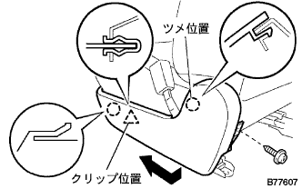
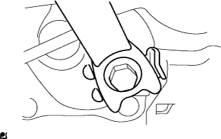

Front seat belt RH removal |
| 1. Precautions for replacing seat belts |
Because of the seat belt with a pliten shona, read the precautions of the SRS Air Batsugu System [Pritensi Yuna] before working and perform a reliable work.
| 2. Removable seat back ASSY removed (overall rear seat) |
Make the rear seat Batsuku in an advance.
 |
Remove the clip of the two bolts mounting part.
 |
Turn over the rear seat Batsuku cover, remove the two bolts, and remove the rear seat Batsuku ASSY.
| 3. Remove the rear seat cushion assemble (integrated rear seat) |
Press the lock of the front lock in the direction of the arrow in the figure to remove it.
Pass the rear seat belt through the rear seat cushion cover and pad back rubber band.
 |
Remove the hook at the rear hook at the rear seat cushion assembly, and remove the rear seat cushion assessy.
| 4. Remove the rear seat back hinge SUB-ASSY RH |
 |
Remove the bolt and remove the rear seat Batsuku hinge RH.
| 5. Rena seat back hinge SUB-ASSY LH removed (integrated rear seat) |
Remove the bolt and remove the rear seat Batsuku hinge LH.
| 6. Remove the rear seat back ASSY RH removed (rear seat split can be divided) |
| 7. Remove the rear seat back ASSY LH removed (rear seat split can be split) |
Make the rear seat Batsuku in an advance.
 |
Remove the clip of the two bolts mounting part.
|
Turn the lower part of the rear seat Batsuku cover, remove the two bolts, and remove the rear seat.
| 8. Remove the rear seat cushion asy (rear seat split can be divided) |
Lock the front side of the rear seat cushion Assy is locked by the rear seat cushion lock striker.
 |
Remove the snap ring from the rear seat back hinge RH.
Rena seat cushion Assy The right bracket is pulled out and remove the rear seat hinge RH.
 |
Remove the bolt and remove the rear -to -hing LH.
Rena seat cushion Assy rear seat hook Assy RH is drawn and the rear seat cushion Assy is removed.
Pass the rear seat belt through the rear seat cushion cover and pad back rubber band.
Remove the rear seat cushion assessy.
| 9. The front door scuff plate RH is removed |
 |
Pull it up by hand, remove the claws, and remove the front door skirt plate RH.
| 10. Front door opening trim Weather strip RH is removed |
Remove the part required to remove the side No.1 trim Asy RH.
| 11. Rear seat 3 point type belt ASSY OUT RH removed (floor anka part) |
Remove the bolt and remove the rear seat 3 point type belt ASSY OUT RH.
| 12. |
 |
Remove the claws and remove the wrap belt Otaanca cover.
| 13. Front sheet ota -altitude Assemble RH removed (floor anka part) |
Remove the bolt and remove the front seat Outabelt Assy RH (floor anka).
| 14. Side No.1 Trim ASSY RH removed |
 |
Pull it in the inside of the vehicle by hand, remove the clip and claws, and remove the side N O.1 Trim ASSY RH.
| 15. Seat belt anchor cover cap removed |
 |
Use a thin -bladed flathead screwdriver with a protective tape to remove the claw, remove the bolt, and remove the seat belt anchor cover.
| 16. Front seat otabelt Assy RH removed |
Remove the bolt and remove the front seat Otabelt Assy RH.
 |
Use a thin -bladed flashed screwdriver with a protective tape to remove the claws, pull the locking button in front and unlock the lock.
Separate the connector (for plitency).
Remove the two bolts and remove the front seat outa belt ASSY RH.
| 17. The front seat cushion shield Inn RH is removed |
Take off the screw.
Remove the upper claw on the upper side.
|  |
Shift the cover in the direction of the arrow in the figure to remove the clip and claws, and remove the front seat cushion shield INN RH.
| 18. Remove the front seat inner na belt ASSY RH |
Separate the wire harness connector and clamp.
|  |
Remove the bolt and remove the front seat innabelt asy RH.